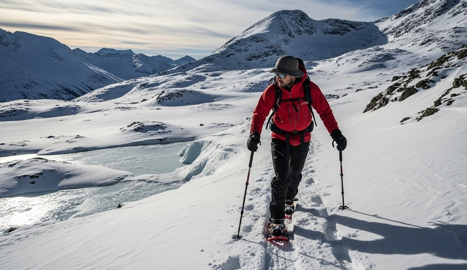

Freeze, Thaw, and Ice: Moving on Snow Safely
Objective
Travel safely on snow/ice by choosing traction, protecting from wet, and planning conservative routes.
Surfaces
- Powder → snowshoes/skis; dry and cold.
- Crust → post‑holing risk; choose early/late travel.
- Ice → microspikes/crampons; poles for balance.
Steps
- Shorten stride; keep center of mass over feet.
- Use poles with winter baskets.
- Vent layers to prevent sweat freeze‑up.
Navigation
Mark turnaround times; daylight is short. Avoid avalanche terrain unless trained and equipped.
Real Example
Hikers switched to microspikes at a shaded pass, reducing slips on refrozen melt and keeping pace.
Checklist
- Traction (microspikes/crampons)
- Poles
- Dry socks and vapor barrier option
Contingencies
- Boots soaked → vapor barrier liners + dry socks.
- Glaze ice → reroute or wait for sun softening.
After-Action
Document which slopes iced earliest and stash traction higher in the pack next time.
← Previous | All Articles | Next →